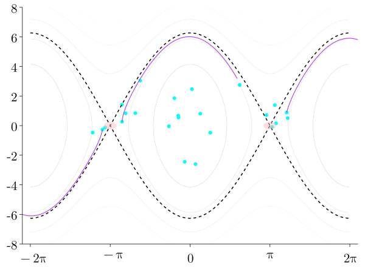
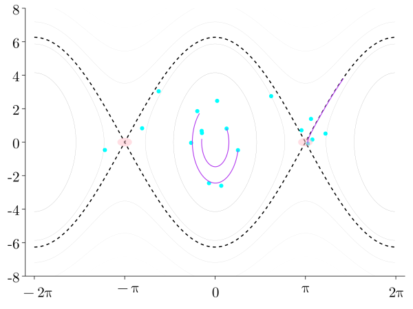

Robust Sensing and Learning Control of Contact-Rich Robots
UT Dallas Seminar

Presenter:
Aykut Satici, Ph.D.
Associate Professor
Director, Robot Control Lab
Mechanical and Biomed. Eng.
Boise, Idaho, USA

Graduate Students:
Wankun Sirichotiyakul 🎓
Nardos Ayele Ashenafi 🎓
Alex Peterson 🎓
Chandika Silva 🎓
Chris Dagher 🎓
Sabanci University: Rehabilitation Robotics


University of Naples Federico II: PB and Geometric Control

Boise State University: Robust Data-Driven Control of Robotic Contact

Loosening up: Chess and Basketball

Robustness against Contact under Uncertainty


Robustness against Contact under Uncertainty
Existing vs. Proposed Control Synthesis Methods
Reinforcement learning (similarly Decision Transformers) 
- Strengths
-
More general
Unknown dynamics OK - Weaknesses
-
Sample complexity
Stability guarantees?
Bayesian Neural Passivity-based Control 
- Strengths
-
Stability guarantees
Closed-form policy
Reasons about model uncertainties
Robustness via Bayesian Learning
System Parameter Uncertainty and Measurement Noise

GTSAM meets Gradient of the Electric Field


Our Methods
| NeuralPbc | NeuralIdaPbc |
|---|---|
| \(H_d\) neural net | \(H_d\) quadratic in \(p\) |
| Sample state space | Sample configuration space |
| No stability certificate | Stability certificate |
| More flexible | As applicable as IdaPbc |
NeuralPbc Problem Statement
- Injecting control task into loss function design
- May require an initial motion/path planning step
- For simple tasks, can just be quadratic loss to goal
- Backprop through closed-loop trajectories
- Forward or adjoint differentiation
- Typically adjoint differentiation is more efficient
- Sampling the state space efficiently
- DAgger sampling
- Initial conditions chosen from previously visited states


We need \(\partial J / \partial \theta\), which depends ODE solutions
- Adjoint sensitivity method: solve the adjoint problem backward in time \[\frac{\text{d}\lambda}{\text{d}t} = -\lambda \frac{\partial f}{\partial x}, \quad \frac{\partial J}{\partial \theta} = \lambda(t_0) \frac{\partial f}{\partial x}\]








Robustness via Bayesian Learning
- NeuralPbc assumes a nominal model \(\dot{x} = f_p(x, u)\)
- The trained controller must not overfit on the observations generated from the nominal model
- Our method: \(H_d\) is a Bayesian neural network
- achieves the performance objective for samples \(\theta \sim P(\theta | \mathbb{D})\)
- searches for ensemble of parameters that meet the desired performance \[ P(\theta \mid \mathbb{D}) = \frac{\overbrace{P(\mathbb{D} \mid \theta)}^{\text{likelihood}}\overbrace{P(\theta)}^{\text{prior}}} {\underbrace{\int_\theta P(\mathbb{D} \mid \theta^\prime)P(\theta^\prime) d\theta^\prime}_{\text{evidence}}}. \]
Optimal Controller


Optimal controller \(|\theta^\star|\) minimizing \(\mathbb{E}\mathcal{J}\)
Minimal expected cost \(\mathbb{E}\mathcal{J}\)
Optimal Controller
- Optimal control parameter a nontrivial function of \(\sigma\) and \(\sigma_p\).
- Bayesian learning strikes the right trade-off.
Deterministic vs. Bayesian

- Subtracting rings from the wheel
- decreases wheel mass
- decreases wheel and pendulum inertia
- moves the center of mass

Rimless Wheel

- Performance objective: achieve hip speed \(\dot{x}_c^* = 1\)m/s \[\begin{align*} J_T = \sum_{t=0}^{T} \| \dot{x}_c^* - \dot{x}_c(t; \theta) \| \end{align*}\]
- Uncertainty in elevation under each spoke \[ p_s \sim \mathbb{U}(0 \textrm{cm}, 2\textrm{cm}) \]

Joint Work with University of Kentucky


Results from the Joint Work

Funding Mechanism: NSF Foundational Research in Robotics

Funding Mechanisms: SBIR and STTRs


Funding Mechanism: NIH through Collaborations